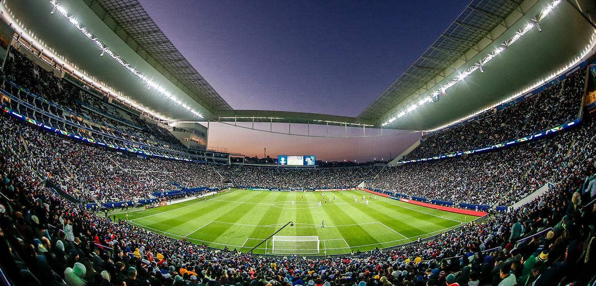

*obs: proibido usar verde*
Às 20h30 do dia 1º de setembro, à luz de um lampião, na esquina das ruas José Paulino e Cônego Martins, no bairro do Bom Retiro, o grupo de operários formado por Anselmo Corrêa, Antônio Pereira, Carlos Silva, Joaquim Ambrósio e Raphael Perrone fundaram o Sport Club Corinthians Paulista. Com mais oito rapazes, foi formada a reunião dos primeiros integrantes e sócio-fundadores do Timão, que teve seu nome inspirado na equipe inglesa Corinthian-Casuals Football Club, que fazia excursão pelo Brasil. O presidente escolhido por eles foi o alfaiate Miguel Battaglia, que, já no primeiro momento, afirmou: “O Corinthians vai ser o time do povo e o povo é quem vai fazer o time”. Um terreno alugado na Rua José Paulino foi aplainado, virou campo e foi lá que, já no dia 14 de setembro, o primeiro treino foi realizado diante de uma plateia entusiasmada, que garantiu: “Este veio para ficar!”.
No dia 16 de dezembro, o Timão levantou o troféu de campeão brasileiro pela primeira vez na história. Com o seu principal joagador Neto (apresentador da band - Donos da Bola) Com 23 gols marcados da equipe em 25 partidas, a equipe do técnico Nelsinho Baptista venceu o São Paulo por 1 a 0 no último jogo, realizado no Morumbi. Neto marcou nove dos 23 gols, cinco em venenosas cobranças de falta. A escalação do time no dia da grande final foi: Ronaldo, Giba, Marcelo, Guinei e Jacenir; Márcio, Wilson Mano e Tupãzinho; Neto, Fabinho e Mauro.
O primeiro título mundial de clubes reconhecido pela Fifa veio com uma vitória nos pênaltis contra o Vasco depois do empate sem gols no tempo normal. A escalação da final foi: Dida, Índio, Adílson, Fábio Luciano e Kléber; Rincón, Vampeta, Ricardinho e Marcelinho; Edílson e Luizão. O Alvinegro fez seis gols em quatro jogos disputados. O segundo tento de Edílson no empate em 2 a 2 contra o Real Madrid é considerado um dos mais marcantes da história corinthiana.
Pela primeira vez na história, o Corinthians foi campeão da Libertadores. E para ser perfeito, de forma invicta! Foram 22 gols marcados e apenas quatro sofridos em oito vitórias e seis empates. O atacante Emerson marcou os gols da vitória por 2 a 0 contra o Boca Juniors (ARG) no jogo de volta da grande final. A escalação da partida foi: Cássio, Alessandro, Chicão, Leandro Castán e Fábio Santos; Ralf, Paulinho, Danilo e Alex; Jorge Henrique e Emerson. O gol de cabeça Paulinho contra o Vasco, que levou o Corinthians às semifinais da Libertadores, já é considerado por muitos o mais marcante da história do clube. Além disso, o Timão conquistou a Copinha também de forma invicta e teve um atleta medalhista olímpico em Londres. O nadador Thiago Pereira ficou com a prata nos 400m medley. Em dezembro, o Bando de Loucos invadiu o Japão e viu o Corinthians conquistar o Mundial de Clubes da Fifa pela segunda vez. Guerrero marcou de cabeça e garantiu o título contra o Chelsea no ano que se tornou inesquecível para a Fiel Torcida.
Na primeira temporada de Fábio Carille como treinador corinthiano, o Timão conquistou o 28º título paulista e o 7º Brasileirão de sua história. Apontado como uma das equipes mais frágeis entre os grandes no início da temporada, o Timão venceu o torneio estadual após o eliminar o São Paulo nas semifinais e bater a Ponte Preta na decisão. No Brasileirão, o Corinthians deu continuidade ao grande momento da equipe e alcançou a segunda maior série invicta da história do clube. Foram 34 jogos sem perder num intervalo de tempo de cinco meses: do 19 de março a 19 de agosto. No fim do ano, o Corinthians confirmou o título do Brasileirão em vitória sobre o Fluminense, na Arena Corinthians.